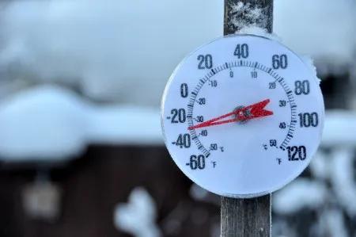

CONVERSOR DE TEMPERATURA
Celsius para fahrenheit
Celsius para kelvin
Escalas Termométricas
As escalas termométricas indicam o nível de temperatura ou de energia térmica de um corpo, sendo que podem ser três: graus Celsius, kelvin e Fahrenheit.
Termômetro marcando temperatura em local frio em duas escalas termométricas diferentes. Na parte externa, há -30 ºF, e na parte interna, -33,3 ºC
CELSIUS
A escala Celsius tem dois pontos fixos. A temperatura de uma mistura de água líquida e gelo em equilíbrio é definida como sendo zero grau Celsius (0 oC) e a temperatura de uma mistura de água líquida e vapor em equilíbrio é definida como sendo cem graus Celsius (100 oC). A escala Celsius é linear e centígrada. Quando a diferença de temperatura entre os dois pontos fixos é dividida em cem partes, a escala fica definida como centígrada. Quando as cem partes são tomadas como sendo todas iguais, definimos, para a escala Celsius, uma lei linear. Portanto, a escala Celsius tem dois pontos fixos, é linear e centígrada.
FAHRENHEIT
Esta escala foi criada pelo inventor Daniel Gabriel Fahrenheit em meados dos anos de 1714 (Daniel também foi o inventor do termômetro de mercúrio). Para tanto ele determinou dois pontos iniciais (pontos fixos). Ele introduziu seu termômetro, ainda sem nenhuma escala, dentro de uma mistura de água, gelo e sal de amônia. O mercúrio se deslocou dentro do termômetro até parar em determinada posição, a qual ele marcou e chamou de zero. O segundo ponto fixo ele obteve ao medir a temperatura do corpo humano, fazendo com que o mercúrio parasse num segundo ponto. Quando isso aconteceu, Fahrenheit marcou a segunda posição e a chamou de 100. Após isto, ele dividiu a distância entre os dois pontos por 100 e teve então sua escala criada. Ao medir a temperatura da fusão do gelo em água na sua nova escala Fahrenheit achou o correspondente a 32ºF, enquanto, a temperatura de ebulição da água era de 212ºF. Essa escala é a mais utilizada nos países oriundos da língua inglesa.
KELVIN
Esta é uma escala absoluta de medição de temperatura pelo seguinte motivo: como a temperatura de um corpo está intimamente relacionada com a agitação dos elétrons do mesmo corpo, é de esperar que a temperatura de zero grau ocorra em uma situação na qual praticamente não houvesse movimento dos elétrons.Essa condição é inatingível na prática, mas, caso fosse, a pressão exercida por um gás na parede interna do recipiente, onde o mesmo se encontraria, seria zero, uma vez que não haveria mais agitação e colisões das moléculas com as paredes do recipiente. “A utilização de modelos matemáticos e físicos permitiu que fosse determinada a temperatura para a qual a pressão de um gás fosse zero. E, essa temperatura foi de -273,15°C, a qual passou a ser chamada de zero Kelvin ou zero absoluto, afirma Dr. José Arnaldo Duarte, professor do Curso CPT Básico de Refrigeração..